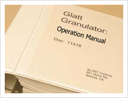
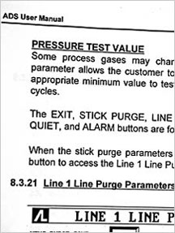

Validation:
More and more industries are emulating pharmaceutical manufacturers and nuclear facilities in requiring detailed and irrefutable validation and documentation of their plants and processes.
DST's Validation Department provides thousands of cost-effective
man-hours per year to customers in regulated industries. DST's Validation
Services (per GAMP 5) include:
- Hazards Analysis of Critical Control Points
- FMEA Analysis
- Generation of Functional Specifications
- Generation of Hardware Design Specifications
- Generation of Software Design Specifications
- Generation and execution of Installation Qualification protocols
- Preparation of Installation Qualification Exceptions and Final Reports
- Generation and execution of Operational Qualification protocols
- Preparation of Operational Qualification Exceptions and Final Reports
- Generation of Traceability Matrices
- Generation and execution of Facility Qualification protocols
- Preparation of Facility Qualification Exceptions and Final Reports
- Generation and execution of Process Validation protocols
- Preparation of Process Validation Exceptions and Final Reports
Again, as with most of DST services, project-size and location are rarely a problem.
|
|
 |
Documentation:
One of DST's core precepts is, "Customers should own their own systems." Yet such can eventuate only if the functionally effective and robust systems we regularly provide are accompanied by detailed and conventionally-formatted documentation. Hence DST documentation packages for all its engineered systems, software, and control panels include:
- Wiring diagrams
- Panel layout drawings
- Complete BOMs
- PLC ladder diagrams
- Fully annotated computer code
- Test documentation
- Operations Manuals (when required)
DST can also generate current and complete "As-Found" documentation packages of systems provided by others. Plant or system owners might need this service when...
- a system undergoes changes over time—but the documentation doesn't; or
- a system's original documentation is lost; or
- a system's documentation was inadequate from the start.
Current and complete documentation is indispensable when system upgrades, enhancements, service (repairs)—or outright system-replacement—is being implemented, procured, or even just considered.
|
|
 |
|
|